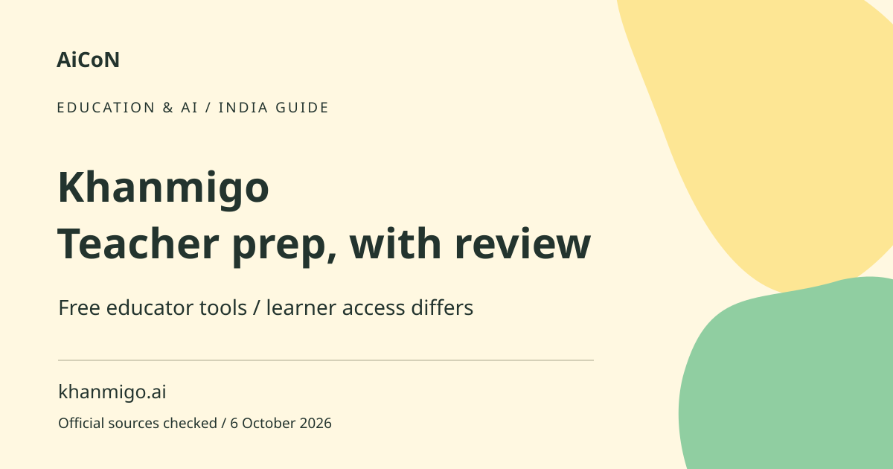

Khanmigo: free teacher tools in India, with limits
Scoped recheck: 24 October 2026. Official eligibility, language list and educator guidance checked. Free Writing Coach remains US-only; no account or output test.
Khanmigo for Teachers offers free educator tools for tasks such as lesson planning. India access is described in Khan Academy's official updates. Free teacher tools are not the same as free learner tutoring.

What is the teacher version?
It helps educators prepare classroom material rather than automatically taking over teaching. A lesson draft, rubric or short assessment can save initial preparation time, but the teacher must check factual accuracy, level and curriculum fit. A rubric describes how work will be assessed; it should not be accepted unchanged if it mismatches the task.
How to use it, step by step
- Start at khanmigo.ai/teachers and check current educator eligibility and your country.
- Use a Khan Academy account and follow the teacher-role access process. Do not choose a paid learner plan simply because it appears beside the free tools.
- Read the language options available in your current teacher interface. Begin in a supported language you can evaluate confidently.
- Choose a preparation task and describe the class level, topic, learning objective and required format.
- Use anonymised examples instead of student names, grades or sensitive personal records.
- Read the generated material and compare it with your curriculum and reliable subject sources. Correct errors and inappropriate assumptions.
- Adapt the wording, examples and difficulty for your class. Check answer keys and any assessment criteria separately.
- Save your reviewed version and follow your institution's rules about AI use and student-data handling.
India, age and language eligibility
The current official locale help page requires a Khan Academy account with the teacher role, a supported account language, and a location outside its restricted regions. India is not in that excluded list; the official international update also records India access. The free Writing Coach is currently only for teachers in the United States. Free teacher tools do not give your students learner tutoring; classroom learner access is separate.
The current supported-language list includes English, Hindi, Bangla, Odia and Urdu, but not Malayalam. Only English, Hindi, Spanish and Portuguese have been fully quality-tested, according to Khan Academy. Other supported languages may have translation or formatting issues. In a tool, open the three-dot menu, choose Preferences and Language, or ask the chat to respond in a language. A language instruction is not a quality guarantee.
The general sign-up help page, last updated in 2024, still says to set the account to English. The newer locale and language articles describe supported languages instead. If access fails, recheck the teacher role, supported account language and current locale rules rather than assuming a paid learner plan is needed.
Free teachers versus paid learners
The pricing page separates free teacher tools from paid parents/learners and district products. The teacher FAQ says parent/learner access requires a US billing address and US residence under its stated eligibility. Do not read a free educator offer as blanket learner access in India. Khan Academy's core learning library is a separate free resource.
Curriculum and classroom checks
A generic lesson may use a different syllabus, example or age level. Check whether it actually teaches your intended skill. For Kerala classes, adapt local context and language carefully, avoiding stereotypes. If a generated question has more than one defensible answer, revise the key or scoring rule before distributing it.
Student privacy
Khan Academy’s educator guidance says Khanmigo is not intended to process personally identifiable information. Do not include student names, identifiable work, grades, sensitive learning needs or other personal records in chat queries or activities. Use anonymous or invented examples; an account being free does not make uploading student records appropriate.
The same guidance says tools are for individual educational use, require rights to submitted material, and require accuracy checks and clear disclosure of AI use when sharing materials externally. Follow school rules. Output should not be the sole basis for student assessment or decisions.
Do not automate judgment
An AI-generated rubric or summary should not silently decide a student's grade. Check the actual work, reasoning and relevant accommodations. Explain criteria plainly and give students a fair opportunity to understand them. Generated summaries can omit context, so keep the original work available when reviewing feedback.
Frequently asked questions
Is learner tutoring free in India through this offer?
No. The free offer is for eligible educators; learner access has separate rules.
Is Malayalam guaranteed?
No. Verify the current supported or experimental language list and check output.
Can I use a lesson without checking it?
No. Review curriculum fit, accuracy and assessment answers.
Can I upload student records?
Do not put personally identifiable information in Khanmigo queries or activities. Khan Academy says the tool is not intended to process it.
Official sources
Checked 6 October 2026. Expanded from an AiCoN short post delivered 6 October 2026. Portal screens and rules can change.
Scoped recheck sources: current locale and Writing Coach limits · language list and quality caveat · older general sign-up guidance · educator privacy and sharing guidance. Checked 24 October 2026; no login or generation test.